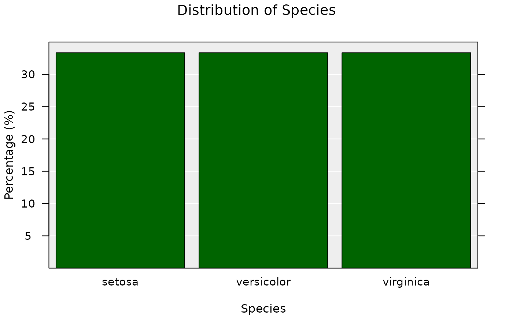
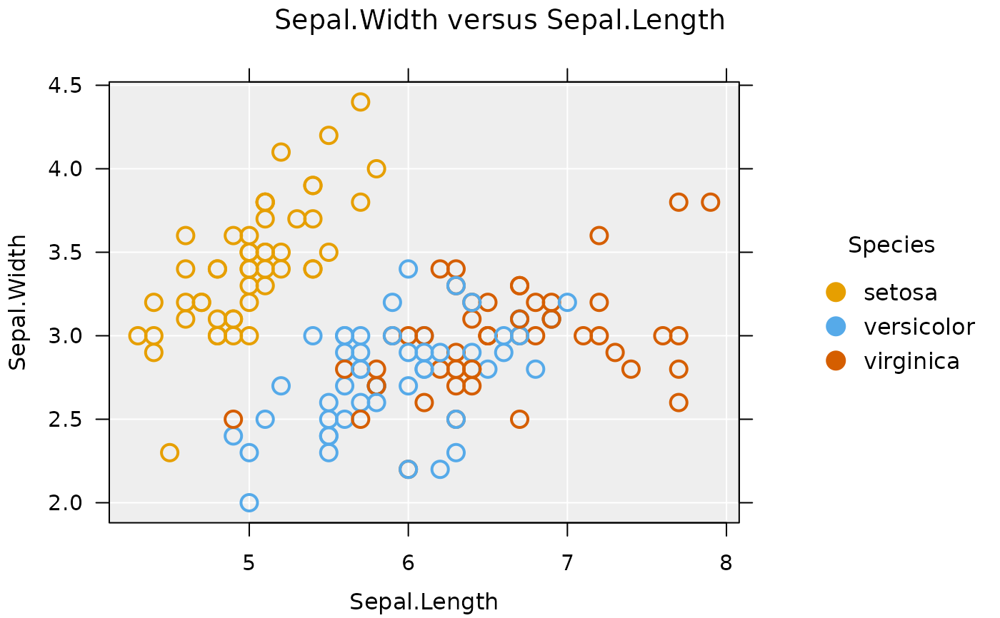
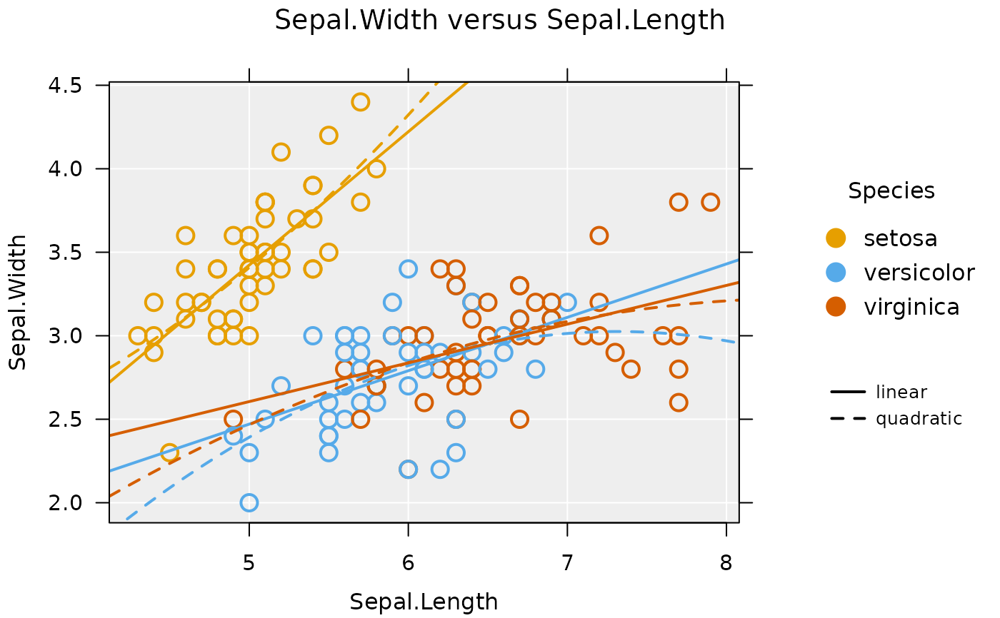
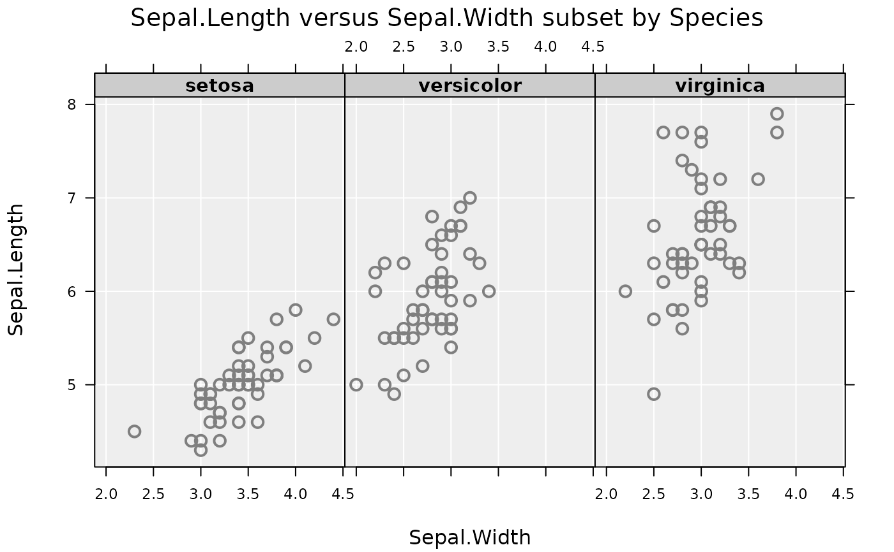

A general plotting function that automatically detects variable type and draws the appropriate plot. It also provides facilities to add inference information to plots, colour- and size-by variables, and can handle survey data.
iNZightPlot(
x,
y = NULL,
g1 = NULL,
g1.level = NULL,
g2 = NULL,
g2.level = NULL,
varnames = list(),
colby = NULL,
sizeby = NULL,
symbolby = NULL,
extra.vars,
locate = NULL,
locate.id = NULL,
locate.col = NULL,
locate.extreme = NULL,
locate.same.level = NULL,
highlight = NULL,
data = NULL,
design = NULL,
freq = NULL,
missing.info = TRUE,
xlab,
ylab,
show_units = TRUE,
new = TRUE,
inzpars = inzpar(),
layout.only = FALSE,
plot = TRUE,
xaxis = TRUE,
yaxis = TRUE,
xlim = NULL,
ylim = NULL,
zoombars = NULL,
hide.legend = FALSE,
df,
env = parent.frame(),
...
)a vector (numeric or factor), or the name of a column in the
supplied data or design object
a vector (numeric or factor), or the name of a column in the
supplied data or design object
a vector (numeric or factor), or the name of a column in the
supplied data or design object.
This variable acts as a subsetting variable.
the name (or numeric position) of the level of g1
that will be used instead of the entire data set
a vector (numeric or factor), or the name of a column in the
supplied data or design object.
This variable acts as a subsetting variable, similar to g1
same as g1.level, however takes the additional value
"_MULTI", which produces a matrix of g1 by g2
a list of variable names, with the list named using
the appropriate arguments
(i.e., list(x = "height", g1 = "gender"))
the name of a variable (numeric or factor) to colour points by. In the case of a numeric variable, a continuous colour scale is used, otherwise each level of the factor is assigned a colour
the name of a (numeric) variable, which controls the size of points
the name of a factor variable to code point symbols
the names of any additional variables to be passed through the internal functions to the create and plot methods.
variable to label points
id of points (row numbers) to label, or
an expression that evaluates as a logical vector (e.g., x > 5)
the colour to locate points if a variable is not specified
numeric, the number of extreme points to label
(using Mahalanobis' distance)
name of a variable to label points with same level of as those specified with `locate.id`
numeric vector consisting of the row numbers/IDs of
points to highlight
the name of a data set
the name of a survey object, obtained from the survey
package
the name of a frequency variable if the data are frequencies
logical, if TRUE, information regarding
missingness is displayed in the plot
the text for the x-label
the text for the y-label
logical, if `TRUE` (default) units will be shown beside axies and legend variable labels
logical, used for compatibility
allows specification of iNZight plotting parameters over multiple plots
logical, if TRUE, only the layout is drawn
(useful if a custom plot is to be drawn)
logical, if FALSE, the plot is not drawn
(used by summary)
logical, whether or not to draw the x-axis
logical, whether or not to draw the y-axis
specify the x limits of the plot
specify the y limits of the plot
numeric, length 2; when drawing a bar plot, if the number of bars is too large, the user can specify a subset. The first value is the starting point (1 is the first bar, etc), while the second number is the number of bars to show.
logical, if TRUE, the legend will not be drawn
compatibility argument
compatibility argument
additional arguments, see inzpar
An inzightplotoutput object, which contains the information
displayed in the plot
The main goal of 'iNZightPlots' is to make it easy to beginners to explore a dataset graphically, using a suite of simple arguments to add features to their graph.
The second use of this function is within the companion software 'iNZight', providing a single function call with arguments controlled by the user through a GUI.
iNZightPlot(Species, data = iris)

iNZightPlot(Petal.Width, g1 = Species, data = iris)
iNZightPlot(Sepal.Length, Sepal.Width, data = iris,
colby = Species)

iNZightPlot(Sepal.Length, Sepal.Width, data = iris,
colby = Species, trend = c("linear", "quadratic"),
trend.by = TRUE, trend.parallel = FALSE)

# add inference information
iNZightPlot(Petal.Width, data = iris,
inference.type = "conf", inference.par = "mean")
iNZightPlot(Petal.Width, data = iris,
inference.type = "conf", inference.par = "mean",
bootstrap = TRUE)
# alternatively, use the formula interface
inzplot(Sepal.Length ~ Sepal.Width | Species, data = iris)
